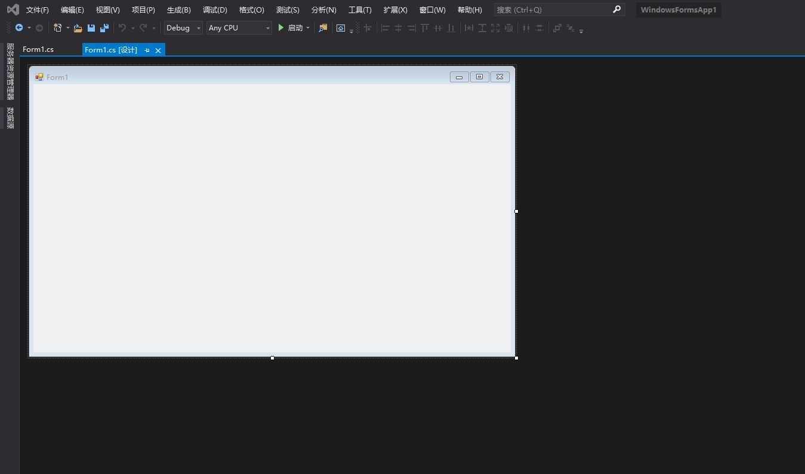
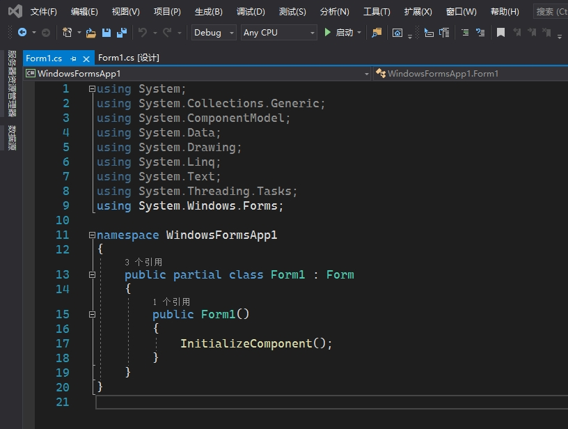
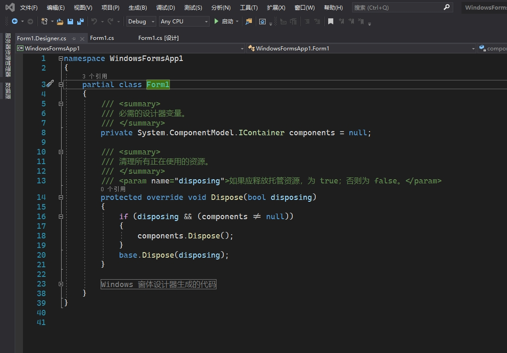
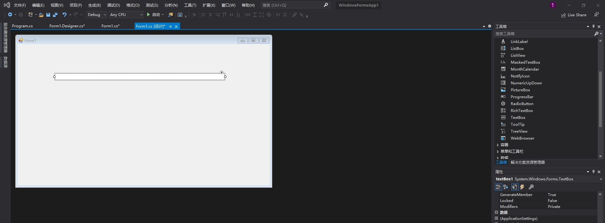
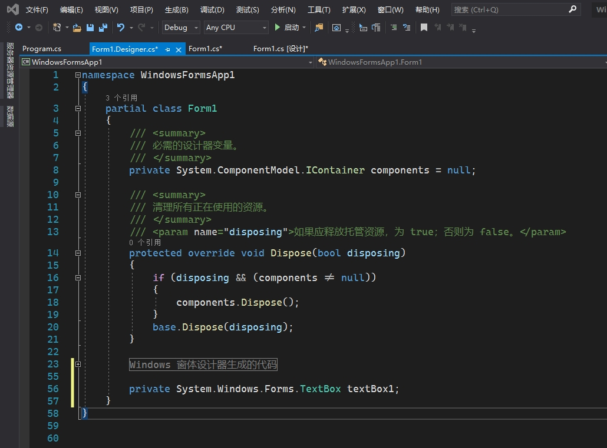
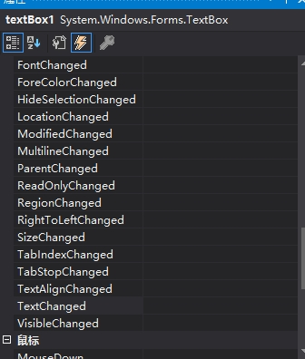
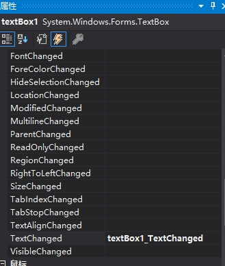
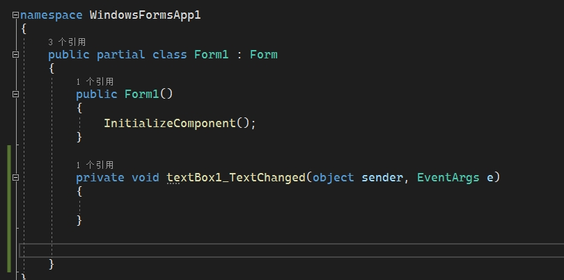

Windows Form编程
Windows Form编程 Ⅰ
代码执行机制
两个关键词：事件驱动，被动
不同于控制台应用的开始运行直到结束，或是等待用户输入，WinForm是由事件驱动的。用户使用时会产生诸如键盘输入，鼠标点击，鼠标移动等等一系列的事件，通过捕获其中一部分有用的事件进行响应
- 被动执行
- 需要考虑各种可能的用户输入（各种事件），对其中特殊情况做出针对性的处理
- 消息循环机制：等待消息 - 获取消息 - 处理消息 - 等待消息
代码框架
vs新建Windows 窗体应用(.NET Framework)

选中自动生成的Form1，右键属性或F7可以查看控件代码
（控件可以包含其他控件，现在这个控件可以理解成将在内部添加的控件的父控件）

可以看到Form1继承自Form，并有一个partial修饰，表示当前的代码只是Form1的一部分
Form1的另一部分代码位于Form1.Designer.cs，可以在sln视图下找到

这部分代码会根据设计视图下的操作自动改变，不需要自行编辑（自行编辑就 危）
此时程序已经可以运行了，生成一个空白窗口
子控件的添加和对需要响应事件的添加
从工具箱中选取控件拖拽至父窗口，调整大小位置

此时可以发现Form1.Designer.cs已经自动生成了对应的控件

添加事件选择闪电图标进入预定义的事件列表
双击需要生成的事件


此时在Form1.cs中生成对应的事件

注意Form1.cs中的方法在设计视图下可以不用，但如果设计设图中的事件和Form1.cs`中的不同会无法显示图形界面，所以事件处理函数改名请在闪电事件列表中操作
之后就是开发事件处理逻辑和控价的各种属性调整了，这里暂且不讲
All articles in this blog are licensed under CC BY-NC-SA 4.0 unless stating additionally.